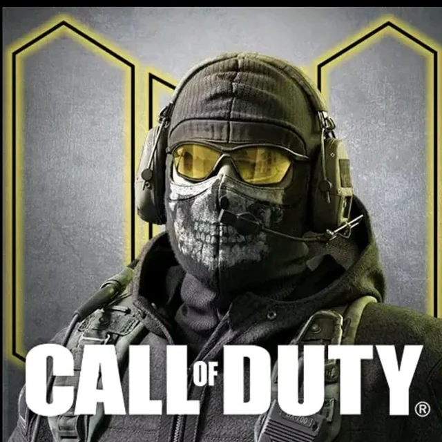

The Call of Duty: Mobile World Championship 2020 Tournament was a partnership between Activision Blizzard and Sony Mobile Communications, and marks the game's entry into the top tier of esports.[29] It featured more than $1 million in total prizes, which include both cash and in-game cosmetics.[30] Competing teams were drawn directly from the game's community through four open online qualifiers from April 20 to May 24, 2020. Eligible players ranked veteran or higher have the chance to play.[31] The 2021 tournament featured a $2 million prize pool.

Call of Duty: Mobile is a first-person multiplayer battle game which can be played on iOS, Android devices as well as using a web browser. It is the latest mobile version from the Call of Duty franchise, which has a range of other Call of Duty games available on popular games consoles. Celebrates content creators for their community building, gameplay & entertainment contributions in Call of Duty: Mobile. Champions players, from all backgrounds, with a passion for Call of Duty: Mobile by embracing their dedication with an official club to share, create and find resources for content creation. Cultivates an aspirational influencer community in which its members not only grow, but also pay-it-forward. At the moment, Creator Club is in beta and only available in the United States and Mexico during this period with preliminary plans to roll out the program globally by the end of 2022. All Creator Club content (“Creators”) must meet Call of Duty: Mobile’s Trust and Safety Guidelines, and must be at least 18 years of age. Creators are not required to play Call of Duty: Mobile exclusively.